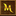

Bot do gry Margonem napisany jest jako rozszerzenie do przeglądarki google chrome.
Pobranie bota oraz instalacja go w przeglądarce.
-
Aby pobrać bota kliknij tutaj.
-
Wypakuj pobrany plik .zip
Bot znajduje się w katalogu 'extension'
-
Aby dodać bota do swojej przeglądarki przejdź do ustawień rozszerzeń. Mozesz to zrobić wpisując ponizszy 'link' w pasku wpisywania adresu strony.
chrome://extensions/
-
Włącz tryb programisty w prawym góryn rogu strony.
-
Kliknij na przycisk załaduj rozpakowane i następnie wybierz katalog 'extension' z wcześniej pobranego i rozpakowanego pliku .zip
-
Gotowe. Twój bot został dodany.
Teraz powinieneś wiedzieć tą ikonke w pasku dodatków. 
Rozszerzenia jakie potrzebujesz do poprawnego działania bota.
-
Auto zbieranie lotu + filtr. (by Doceluf)
-
Auto leczenie. (by Halt O-Carrick)
-
Mini map plus. (by Priveeq)
-
To podstawowy set do korzystania z bota, inne dodatki są opcjonalne.
dodatki mozemy dodac bezpośrednio z poziomu gry klikając w tę ikonę:
Działanie bota i jego funkcje.
-
Bot automatycznie przemieszcza się po mapie oraz atakuje moby.
-
Jeśli w danej lokalizacji nie ma zadnych mobów bot przechodzi do kolejnej lokacji. Dlatego zaleca się go uzywac w grotach oraz jaskiniach.
-
Bot automatycznie robi reload gry jeśli nasza postać się zawiesi.
-
Bot automatycznie zamyka okno pojedynku.
-
Po kliknieciu na ikonke bota mozesz zobaczyc swoje statystyki.